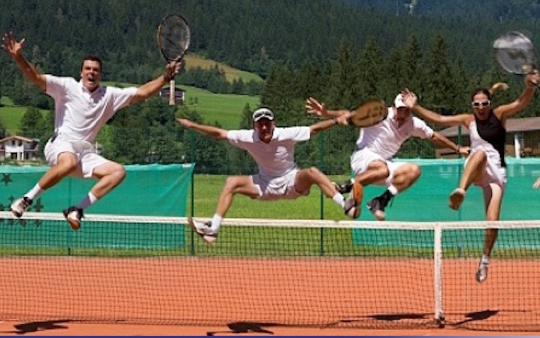
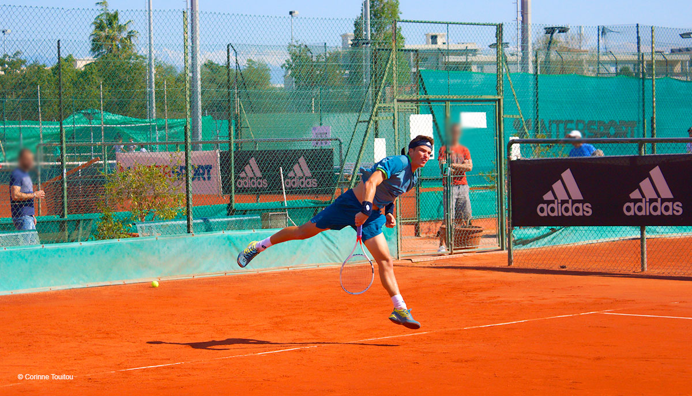

Au printemps le TCRB ouvre ses installations de plein air au 88 avenue de la Plage. Sa situation exceptionnelle au bord de la mer et dans un cadre verdoyant en fait un club au charme unique !
Les installations de plein air comportent :
- 4 courts en terre battue naturelle disponibles pendant la belle saison et 2 courts en terre battue artificielle accessibles toute l'année.
- Un club house à l'architecture normande pittoresque dans lequel se trouve la réception et le bar donnant sur une vaste terrasse qui domine le court central.
- Des services et installations sportives diverses : vestiaires - douches - wifi - BeIN SPORTS - mini tennis - ping-pong - panneau de basket - mur d'entraînement ...
Un club de tennis ouvert à tous que ce soit débutant ou expert nous saurons vous ravire.
